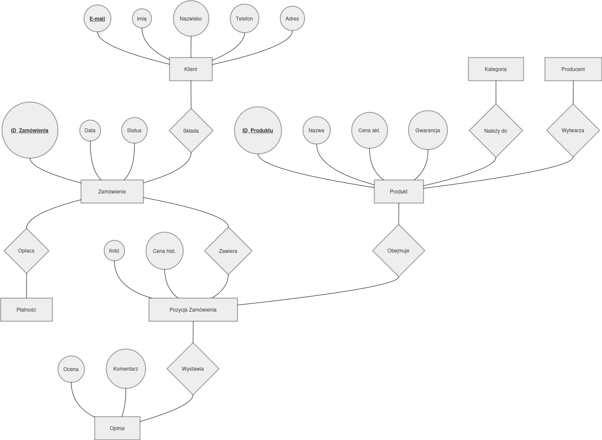
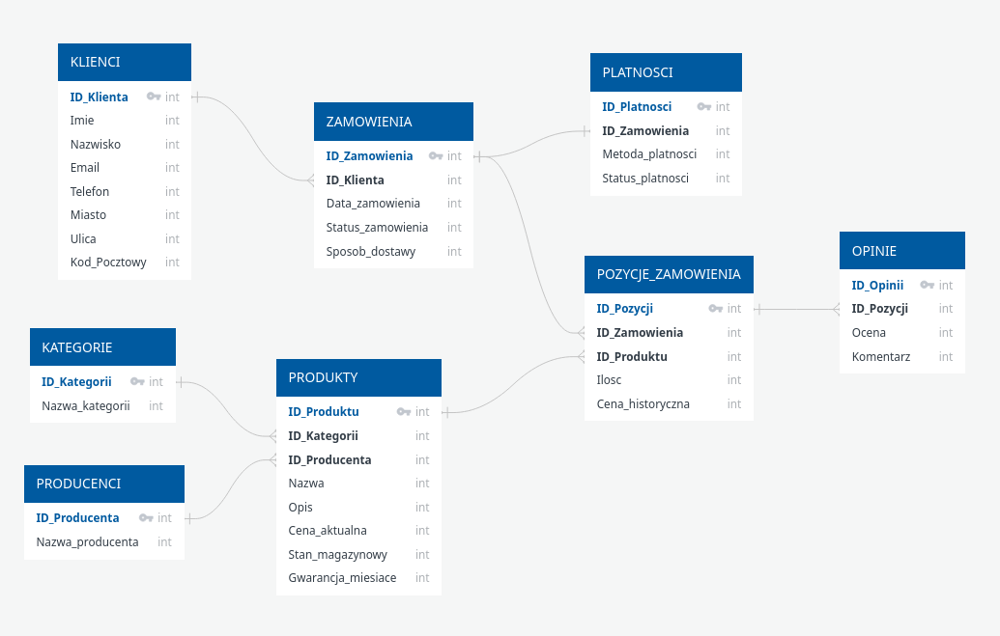
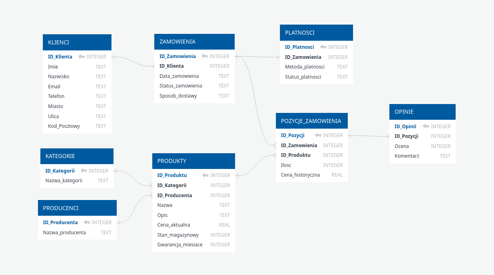
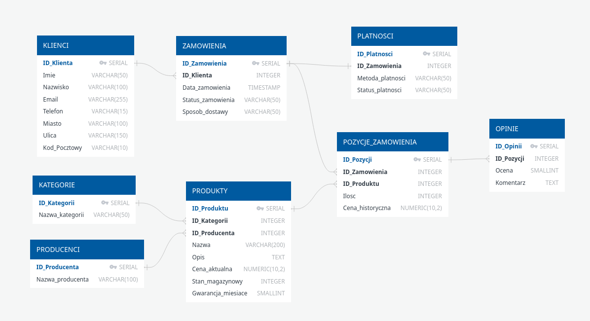

Sprawozdanie: Projektowanie bazy danych¶
- Autorzy:
Oskar Mąka
Daniel Szokało
Dawid Szkoało
Link do repozytorium z modułem: https://github.com/oski486/BD_PlanBazyDanych_zad1
1. Wybór zagadnienia, opis procesów i danych¶
Wybrane zagadnienie: System zarządzania sprzedażą w sklepie internetowym z elektroniką. Projekt obejmuje obsługę bazy klientów, katalogu produktów elektronicznych (z uwzględnieniem producentów i okresów gwarancyjnych), kategoryzacji sprzętu, a także pełen proces składania i obsługi zamówień, płatności, dostaw oraz systemu ocen.
Opis procesów i więzy integralności:
Głównym procesem w systemie jest realizacja transakcji zakupu sprzętu elektronicznego. * Rejestracja: Klient zakłada konto w systemie, podając swoje dane osobowe oraz adresowe. Istnieje twardy wymóg (więź integralności), aby adres e-mail był unikalny w skali całej bazy. * Katalog i Koszyk: Produkty elektroniczne są kategoryzowane (np. Laptopy, Smartfony, Podzespoły bazowe) i przypisane do konkretnych producentów. Klient kompletuje zamówienie, dodając produkty do koszyka. * Obsługa Zamówienia: Każde zamówienie ma swój cykl życia monitorowany przez status (np. „W trakcie kompletowania”, „Wysłane”, „Gotowe do odbioru”). Klient wybiera sposób dostawy. Z uwagi na dużą dynamikę cen elektroniki na rynku, system w momencie złożenia zamówienia „zamraża” cenę produktu, zapisując ją jako cenę historyczną dla danej transakcji. * Płatności: Z zamówieniem powiązana jest operacja finansowa. System aktualizuje status płatności (np. „Oczekująca”, „Opłacona”, „Błąd autoryzacji”) bazując na wybranej metodzie (np. BLIK, Karta płatnicza, Raty 0%). * Opinie: Po zmianie statusu zamówienia na „Dostarczone”, klient zyskuje możliwość wystawienia oceny punktowej i tekstowej recenzji dla każdego zakupionego sprzętu osobno.
Wykaz gromadzonych danych:
Dane klienta: Imię, Nazwisko, Adres e-mail, Numer telefonu, Miasto, Ulica, Kod pocztowy.
Dane produktu: Nazwa sprzętu, Opis techniczny, Cena jednostkowa, Stan magazynowy, Długość gwarancji w miesiącach.
Dane producenta: Nazwa producenta.
Dane kategorii: Nazwa kategorii sprzętowej.
Dane zamówienia: Data i czas złożenia, Status zamówienia, Sposób dostawy.
Dane płatności: Metoda płatności, Status płatności.
Dane szczegółowe transakcji: Ilość zamawianych sztuk, Cena zakupu (historyczna).
Dane opinii: Ocena (1-5), Komentarz.
2. Prototyp CSV¶
Aby zweryfikować kompletność przetwarzanych informacji, przygotowano „płaską” (nieznormalizowaną) reprezentację danych dla transakcji zakupu.
Imie,Nazwisko,Email,Telefon,Miasto,Ulica,Kod_Pocztowy,Nazwa_Produktu,Producent,Kategoria,Cena_Aktualna,Gwarancja_Miesiace,Data_Zamowienia,Status_Zamowienia,Sposob_Dostawy,Metoda_Platnosci,Status_Platnosci,Ilosc_Zakupiona,Cena_Historyczna,Ocena_Produktu,Komentarz
Jan,Kowalski,250123@student.pwr.edu.pl,500600700,Wrocław,Wybrzeże Wyspiańskiego 27,50-370,Laptop ThinkPad T14,Lenovo,Komputery,6500.00,36,2023-11-20,Dostarczone,Paczkomat,BLIK,Zakonczona,1,6500.00,5,"Solidny sprzęt na studia."
Jan,Kowalski,250123@student.pwr.edu.pl,500600700,Wrocław,Wybrzeże Wyspiańskiego 27,50-370,Mysz MX Master 3S,Logitech,Akcesoria,450.00,24,2023-11-20,Dostarczone,Paczkomat,BLIK,Zakonczona,1,430.00,4,"Trochę ciężka, ale ergonomiczna."
3. Model Konceptualny (Pojęciowy)¶
Na podstawie analizy procesów i zebranych danych opracowano model pojęciowy, identyfikując obiekty, ich cechy oraz powiązania.
Zidentyfikowane encje¶
Klient - osoba dokonująca zakupów w sklepie.
Producent - marka produkująca dany sprzęt elektroniczny.
Produkt - oferowany w sklepie sprzęt elektroniczny.
Zamówienie - zdarzenie potwierdzające zawarcie transakcji i parametry logistyczne.
Kategoria - sekcja grupująca rodzajowo asortyment.
Płatność - operacja finansowa powiązana z konkretnym zamówieniem.
Opinia - recenzja pojedynczego produktu wystawiona przez klienta po zakupie.
Zdefiniowane atrybuty/własności¶
Klient:
Imię,Nazwisko,E-mail(identyfikator unikalny),Telefon,Miasto,Ulica,Kod pocztowy.Producent:
Nazwa producenta.Produkt:
Nazwa,Opis,Cena aktualna,Stan magazynowy,Gwarancja.Zamówienie:
Data zamówienia,Status zamówienia,Sposób dostawy.Kategoria:
Nazwa kategorii.Płatność:
Metoda płatności,Status płatności.Opinia:
Ocena,Komentarz.
Opis związków¶
Klient – Zamówienie (1:N): Klient może wygenerować wiele zamówień. Zamówienie należy zawsze do jednego klienta.
Kategoria – Produkt (1:N): Kategoria zawiera wiele produktów elektronicznych.
Producent – Produkt (1:N): Jeden producent wytwarza wiele produktów dostępnych w sklepie.
Zamówienie – Produkt (M:N): Jedno zamówienie może zawierać wiele różnych produktów. Ten sam produkt może pojawiać się w wielu zamówieniach. Związek ten rozwiązywany jest przez encję słabą Pozycja zamówienia.
Zamówienie – Płatność (1:1): Każde zamówienie ma jedną, powiązaną ze sobą transakcję płatniczą określającą status rozliczenia.
Pozycja zamówienia – Opinia (1:0..1): Konkretny egzemplarz zakupionego w ramach zamówienia sprzętu może, ale nie musi, zostać oceniony.
Określenie związków niepoprawnych (pułapki połączeń)¶
Pułapka wiatraka (chasm trap): Zidentyfikowano ryzyko błędu w postaci bezpośredniego połączenia encji Klient z encją Produkt (związek „Klient kupuje Produkt”). Ominięcie encji Zamówienie i Pozycja zamówienia spowodowałoby drastyczną utratę kontekstu informacyjnego. Wiedzielibyśmy, że klient nabył laptopa, ale system nie byłby w stanie powiązać tego z konkretną datą zakupu, statusem wysyłki czy zapłaconą kwotą (która dla elektroniki często ulega zmianom w czasie).
Identyfikacja encji słabych¶
Z uwagi na relację wiele-do-wielu między Zamówieniem a Produktem, wprowadzono encję słabą reprezentującą koszyk zakupowy.
Uzasadnienie: Byt ten nie istnieje samodzielnie w oderwaniu od konkretnego Zamówienia i konkretnego Produktu z katalogu.
Atrybuty:
Ilość(liczba zamówionych sztuk sprzętu) orazCena historyczna(wartość w momencie kliknięcia „Kupuję”).Encja słaba:
Pozycja zamówienia
Schemat w notacji Chena¶

Rysunek 1: Model konceptualny bazy danych sklepu z elektroniką.¶
4. Model logiczny i proces normalizacji¶
4.1. Przebieg procesu normalizacji¶
Krok 1: Pierwsza Postać Normalna (1NF)
Wiersze są unikalne, tworzymy sztuczne klucze główne, m.in.
ID_ZamowieniaorazID_Produktu. Klucz złożony z tych dwóch identyfikuje konkretny wiersz transakcji. Dane adresowe, recenzje i informacje o produkcie mocno się powielają.
Krok 2: Druga Postać Normalna (2NF)
- Rozbijamy płaską strukturę względem częściowych zależności od klucza złożonego (
ID_Zamowienia+ID_Produktu): Zależne od samego
ID_Produktu: Nazwa, Producent, Kategoria, Cena, Gwarancja -> Tabela ProduktyZależne od samego
ID_Zamowienia: Data, Status, Dane Klienta, Dostawa, Płatność -> Tabela ZamówieniaZależne od całego klucza: Ilość, Cena_historyczna, Ocena, Komentarz -> Tabela Pozycje_Zamowienia
- Rozbijamy płaską strukturę względem częściowych zależności od klucza złożonego (
Krok 3: Trzecia Postać Normalna (3NF)
- Eliminacja zależności przechodnich:
Z tabeli Zamówienia wydzielamy powtarzające się dane adresowe i kontaktowe do tabeli Klienci (nowy klucz:
ID_Klienta).Z tabeli Produkty wydzielamy klasyfikację sprzętu do tabeli Kategorie (
ID_Kategorii) oraz markę do tabeli Producenci (ID_Producenta).Z tabeli Zamówienia wyodrębniamy kwestie finansowe do osobnej tabeli Platnosci.
Z tabeli Pozycje_Zamowienia odłączamy atrybuty opcjonalne (opinie), przenosząc je do tabeli Opinie połączonej z pozycją koszyka.
4.2. Ostateczna struktura tabel (3NF)¶
W wyniku normalizacji wyodrębniono 8 tabel.
Klienci:
ID_Klienta(PK),Imie,Nazwisko,Email,Telefon,Miasto,Ulica,Kod_PocztowyProducenci:
ID_Producenta(PK),Nazwa_producentaKategorie:
ID_Kategorii(PK),Nazwa_kategoriiProdukty:
ID_Produktu(PK),ID_Kategorii(FK),ID_Producenta(FK),Nazwa,Opis,Cena_aktualna,Stan_magazynowy,Gwarancja_miesiaceZamowienia:
ID_Zamowienia(PK),ID_Klienta(FK),Data_zamowienia,Status_zamowienia,Sposob_dostawyPlatnosci:
ID_Platnosci(PK),ID_Zamowienia(FK),Metoda_platnosci,Status_platnosciPozycje_Zamowienia:
ID_Pozycji(PK),ID_Zamowienia(FK),ID_Produktu(FK),Ilosc,Cena_historycznaOpinie:
ID_Opinii(PK),ID_Pozycji(FK),Ocena,Komentarz
4.3. Diagram ERD (Model Logiczny)¶

Rysunek 2: Model logiczny (ERD) bazy danych sprzętu elektronicznego (3NF).¶
5. Model fizyczny bazy danych¶
Różnice implementacyjne między modelami fizycznymi wynikają wprost z silników RDBMS – ograniczeń typowania SQLite oraz bogatych możliwości deklaratywnych PostgreSQL.
5.1. Model fizyczny dla środowiska SQLite¶
Z uwagi na bardzo okrojony zestaw typów (INTEGER, REAL, TEXT, BLOB, NULL), daty są mapowane jako TEXT, a wartości finansowe na REAL. Boolean (dla opcjonalnych flag) również interpretowany jest wewnętrznie jako INTEGER.
Specyfikacja tabel (SQLite):
Klienci:
ID_Klienta: INTEGER PRIMARY KEY,Imie: TEXT,Nazwisko: TEXT,Email: TEXT,Telefon: TEXT,Miasto: TEXT,Ulica: TEXT,Kod_Pocztowy: TEXTProducenci:
ID_Producenta: INTEGER PRIMARY KEY,Nazwa_producenta: TEXTKategorie:
ID_Kategorii: INTEGER PRIMARY KEY,Nazwa_kategorii: TEXTProdukty:
ID_Produktu: INTEGER PRIMARY KEY,ID_Kategorii: INTEGER,ID_Producenta: INTEGER,Nazwa: TEXT,Opis: TEXT,Cena_aktualna: REAL,Stan_magazynowy: INTEGER,Gwarancja_miesiace: INTEGERZamowienia:
ID_Zamowienia: INTEGER PRIMARY KEY,ID_Klienta: INTEGER,Data_zamowienia: TEXT,Status_zamowienia: TEXT,Sposob_dostawy: TEXTPlatnosci:
ID_Platnosci: INTEGER PRIMARY KEY,ID_Zamowienia: INTEGER,Metoda_platnosci: TEXT,Status_platnosci: TEXTPozycje_Zamowienia:
ID_Pozycji: INTEGER PRIMARY KEY,ID_Zamowienia: INTEGER,ID_Produktu: INTEGER,Ilosc: INTEGER,Cena_historyczna: REALOpinie:
ID_Opinii: INTEGER PRIMARY KEY,ID_Pozycji: INTEGER,Ocena: INTEGER,Komentarz: TEXT

Rysunek 3: Fizyczny schemat bazy danych opracowany dla silnika SQLite.¶
5.2. Model fizyczny dla środowiska PostgreSQL¶
PostgreSQL umożliwia zastosowanie precyzyjnych i natywnych typów ułatwiających późniejszą obsługę – m.in. typów numerycznych dla cen (unikających błędu precyzji zmiennoprzecinkowej), typów czasowych z odpowiednią strefą oraz ścisłych ograniczeń długości łańcuchów znaków.
Specyfikacja tabel (PostgreSQL):
Klienci:
ID_Klienta: SERIAL PRIMARY KEY,Imie: VARCHAR(50),Nazwisko: VARCHAR(100),Email: VARCHAR(255) UNIQUE,Telefon: VARCHAR(15),Miasto: VARCHAR(100),Ulica: VARCHAR(150),Kod_Pocztowy: VARCHAR(10)Producenci:
ID_Producenta: SERIAL PRIMARY KEY,Nazwa_producenta: VARCHAR(100)Kategorie:
ID_Kategorii: SERIAL PRIMARY KEY,Nazwa_kategorii: VARCHAR(50)Produkty:
ID_Produktu: SERIAL PRIMARY KEY,ID_Kategorii: INTEGER REFERENCES Kategorie,ID_Producenta: INTEGER REFERENCES Producenci,Nazwa: VARCHAR(200),Opis: TEXT,Cena_aktualna: NUMERIC(10,2),Stan_magazynowy: INTEGER,Gwarancja_miesiace: SMALLINTZamowienia:
ID_Zamowienia: SERIAL PRIMARY KEY,ID_Klienta: INTEGER REFERENCES Klienci,Data_zamowienia: TIMESTAMP,Status_zamowienia: VARCHAR(50),Sposob_dostawy: VARCHAR(50)Platnosci:
ID_Platnosci: SERIAL PRIMARY KEY,ID_Zamowienia: INTEGER REFERENCES Zamowienia,Metoda_platnosci: VARCHAR(50),Status_platnosci: VARCHAR(50)Pozycje_Zamowienia:
ID_Pozycji: SERIAL PRIMARY KEY,ID_Zamowienia: INTEGER REFERENCES Zamowienia,ID_Produktu: INTEGER REFERENCES Produkty,Ilosc: INTEGER,Cena_historyczna: NUMERIC(10,2)Opinie:
ID_Opinii: SERIAL PRIMARY KEY,ID_Pozycji: INTEGER REFERENCES Pozycje_Zamowienia(ID_Pozycji),Ocena: SMALLINT CHECK(Ocena BETWEEN 1 AND 5),Komentarz: TEXT

Rysunek 4: Fizyczny schemat bazy danych opracowany dla silnika PostgreSQL.¶